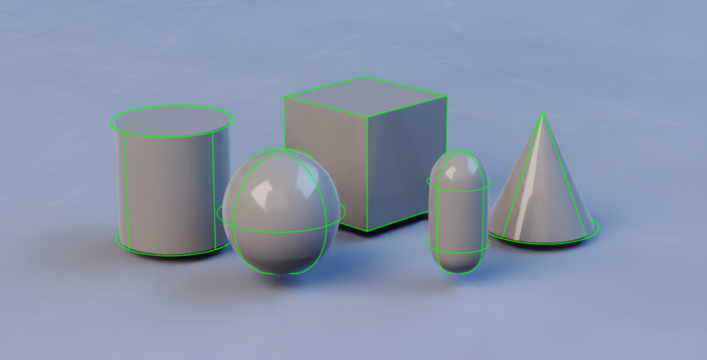
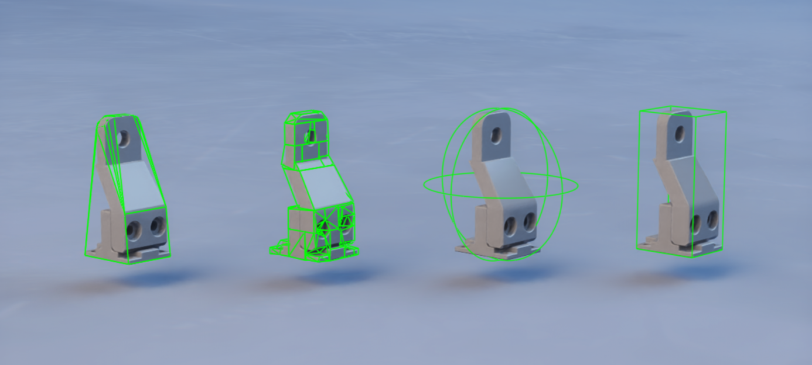
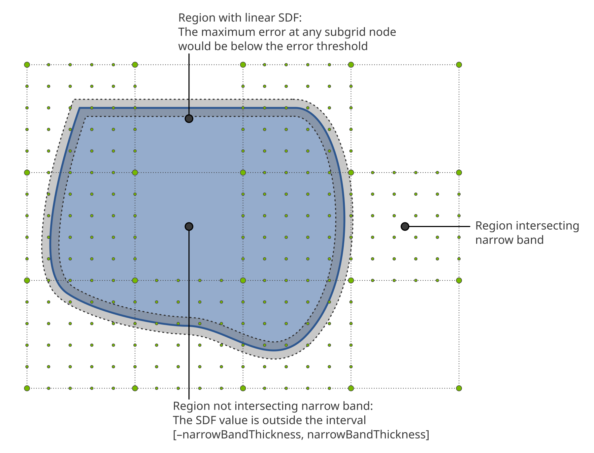
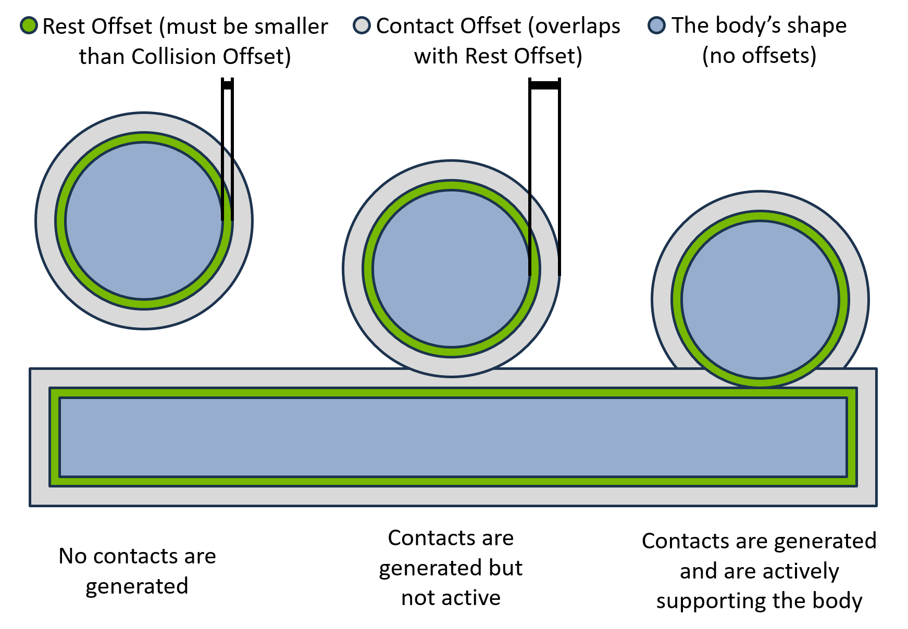
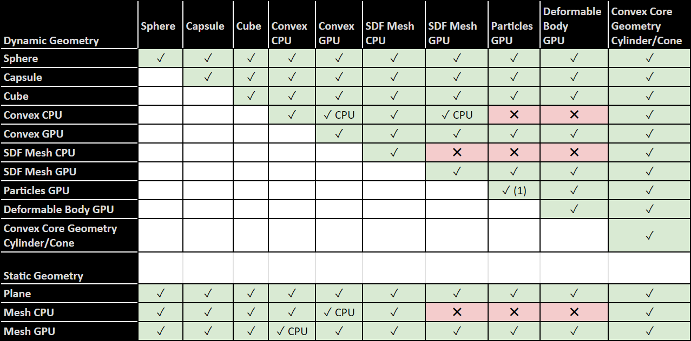

Colliders#
A collider lets geometry participate in collision. It is the base that rigid
bodies and articulation links build on. Apply PhysicsCollisionAPI to a
geometry prim and the collision representation is created implicitly from the USD
geometry. If the collider prim (or an ancestor) has PhysicsRigidBodyAPI, the
collider moves with that dynamic body; otherwise it is static.
This page covers authoring colliders for scenes that ovphysx loads. For the base
authoring pattern (core UsdPhysics typed APIs plus codeless PhysX schemas), refer to
Physics Schemas; for the physics scene and ground, refer to
Physics Scene.
The code examples on this page are fragments, not complete files. Each USDA
example shows a prim to add inside the stage’s defaultPrim hierarchy. Each
Python example extends a script that already created a stage and registered the
codeless PhysX schemas, as shown in
Setting Up a USD Stage and a Physics Scene;
before using a fragment that refers to prim, cylinder_prim, sdf_mesh_prim,
or box_a_prim, define that geometry prim in the surrounding script.
Static Colliders#
A collider with no rigid body on it or above it is static: it does not move, but dynamic bodies rest on and bounce off it (this is how a ground is authored).
def Cube "ground" (
prepend apiSchemas = ["PhysicsCollisionAPI"]
)
{
double size = 100
}
from pxr import UsdGeom, UsdPhysics
cube = UsdGeom.Cube.Define(stage, "/World/ground")
cube.CreateSizeAttr(100.0)
UsdPhysics.CollisionAPI.Apply(cube.GetPrim())
Primitive Colliders#
The following UsdGeom primitives are supported with PhysicsCollisionAPI, and
the resulting collision shape maps to the geometry exactly: Sphere, Cube,
Capsule, Cylinder, Cone. Primitives are the cheapest and most stable
choice — prefer them whenever they approximate the object well. The following
figure shows the five supported primitive shapes:

from pxr import UsdGeom, UsdPhysics
sphere = UsdGeom.Sphere.Define(stage, "/World/sphere")
sphere.CreateRadiusAttr(2.0)
UsdPhysics.CollisionAPI.Apply(sphere.GetPrim())
Boxes are authored as a Cube with non-uniform scale; capsules, cylinders, and
cones take radius, height, and axis attributes.
Rounded Cones and Cylinders#
A cone or cylinder can be given a rounded edge with a positive convex margin (a PhysX-specific, codeless attribute):
from pxr import Sdf
cylinder_prim.CreateAttribute("physxConvexGeometry:margin", Sdf.ValueTypeNames.Float).Set(0.1)
Cones and cylinders can also be approximated with convex meshes, which ignores
the margin but is often faster (prefer it unless you need smooth rolling
behavior). In ovphysx this is controlled per instance through PhysXConfig:
from ovphysx import PhysX, PhysXConfig
# Approximate cylinders/cones with convex meshes instead of exact custom geometry.
physx = PhysX(config=PhysXConfig(
collision_cylinder_custom_geometry=False,
collision_cone_custom_geometry=False,
))
Mesh Colliders#
Mesh colliders (UsdGeom.Mesh with PhysicsCollisionAPI) require an
approximation, chosen with PhysicsMeshCollisionAPI’s
physics:approximation attribute:
none,meshSimplification— full / simplified triangle mesh. Valid only for static or kinematic bodies, not dynamic ones.convexHull— a single convex hull. For dynamic bodies with a roughly convex shape.convexDecomposition— several convex hulls. For dynamic bodies with a non-convex shape.boundingSphere,boundingCube— a coarse, cheap primitive bound.sdf— a signed distance field, for dynamic bodies needing high-detail non-convex contact (refer to SDF Colliders).
The following figure compares the convex and bounding approximations of one source mesh:

A dynamic rigid body cannot use a plain triangle mesh (
none/meshSimplification). Use a convex approximation, convex decomposition, or SDF. Triangle meshes are for static or kinematic geometry.
from pxr import UsdGeom, UsdPhysics
mesh = UsdGeom.Mesh.Define(stage, "/World/mesh")
mesh.CreateFaceVertexCountsAttr(vertex_counts)
mesh.CreateFaceVertexIndicesAttr(indices)
mesh.CreatePointsAttr(points)
UsdPhysics.CollisionAPI.Apply(mesh.GetPrim())
mesh_collision = UsdPhysics.MeshCollisionAPI.Apply(mesh.GetPrim())
mesh_collision.CreateApproximationAttr(UsdPhysics.Tokens.convexHull)
Merging Multiple Meshes#
PhysxMeshMergeCollisionAPI (codeless) applied to an Xformable prim defines a
collection of meshes that are merged into a single collider before the
approximation is computed. The source meshes can be sourced from anywhere in the
stage. If some of the collection’s meshes are descendants of a rigid body, only
those descendants move with the body — a natural consequence of the UsdPhysics
rule that only rigid-body transforms are updated.
SDF Colliders#
Signed-Distance-Field (SDF) collision enables dynamic and kinematic rigid bodies
with high-detail mesh colliders — the standard choice for contact-rich
interaction between highly non-convex shapes (for example robotic assembly).
Enable it by setting the mesh approximation to sdf and applying the codeless
PhysxSDFMeshCollisionAPI:
from pxr import Sdf, UsdPhysics
UsdPhysics.CollisionAPI.Apply(sdf_mesh_prim)
mesh_collision = UsdPhysics.MeshCollisionAPI.Apply(sdf_mesh_prim)
mesh_collision.CreateApproximationAttr("sdf")
sdf_mesh_prim.ApplyAPI("PhysxSDFMeshCollisionAPI")
sdf_mesh_prim.CreateAttribute("physxSDFMeshCollision:sdfResolution", Sdf.ValueTypeNames.Int).Set(300)
Notes:
Multi-material triangle-mesh colliders are not supported with SDF.
Sparse SDFs add a hierarchical structure with fewer samples far from the surface, saving memory at similar fidelity. Enable them with a nonzero
physxSDFMeshCollision:sdfSubgridResolution.
The following figure shows how a sparse SDF combines a coarse background grid with high-resolution subgrids near the surface:

For high-throughput, on-GPU access to SDF samples and gradients at runtime, use
ovphysx’s SDF view: PhysX.create_sdf_view() in Python or
ovphysx_create_sdf_view() in C (GPU instances only). SDF views are tied to the
attached USD stage; after reset_stage() or detach_ovstage(), destroy existing
views and create replacements after re-attaching a stage.
Cooking Mesh Colliders#
Generating a collision approximation from mesh data is called cooking, and
its output is cooking data. ovphysx cooks colliders that need it when a stage
is attached, blocking until the required data is available (from cache or freshly
computed). To persist cooked results across runs, configure a cooked-collider
cache directory through PhysXConfig(cooked_collider_cache_dir=...) — refer to the
cooked-collider cache (UJITSO) section of the
Developer Guide for details.
Rest and Contact Offsets#
The contact offset and rest offset tune when and where contacts are
generated and resolved. Both are attributes of the codeless PhysxCollisionAPI
applied to a collider prim.
Contact offset — the distance from the surface at which contacts start being generated. The default auto-computes a value from gravity, timestep, and geometry extent. Increase it for fast-moving or thin objects that tunnel through each other in one step (an alternative is CCD, refer to Rigid Bodies). Larger offsets can cost performance because more contacts are generated.
Rest offset — a small distance from the surface at which the effective contact takes place. It can be positive, zero, or negative. A negative rest offset is useful when the collision geometry is slightly larger than the render mesh, so contact occurs at the visually correct distance.
The following figure shows where each offset sits relative to the collider surface:

from pxr import Sdf
prim.ApplyAPI("PhysxCollisionAPI")
prim.CreateAttribute("physxCollision:contactOffset", Sdf.ValueTypeNames.Float).Set(0.02)
prim.CreateAttribute("physxCollision:restOffset", Sdf.ValueTypeNames.Float).Set(0.0)
Contact and rest offsets can also be read/written at runtime in bulk through the
RIGID_BODY_CONTACT_OFFSET / RIGID_BODY_REST_OFFSET tensor types — refer to the
Tensor Bindings (deprecated) reference.
Collision Filtering#
Two mechanisms disable collision between specific colliders.
Collision Group Filtering#
Collision groups (UsdPhysicsCollisionGroup) enable or disable collision between
sets of colliders. Every collider in a group collides with every other collider,
and each group carries a list of other groups it should (or should not) collide
with. By default the lists are opt-out: every group collides with every other,
and the lists name pairs that do not collide. Setting
physxScene:invertCollisionGroupFilter on the scene inverts this to opt-in: no
pairs collide except those named.
Assign colliders to a group with a Usd.CollectionAPI (colliders collection)
on the group prim, and relate groups to filter with the group’s
filteredGroups relationship.
Pairwise Collision Filtering#
When groups are too coarse, UsdPhysicsFilteredPairsAPI disables collision
between specific stage hierarchies. Pairwise filtering takes precedence over
group filtering. The filteredPairs relationship names the hierarchies to
filter; all child objects (colliders, rigid bodies, articulations) are filtered
with the pair.
from pxr import UsdPhysics
filtered = UsdPhysics.FilteredPairsAPI.Apply(box_a_prim)
filtered.CreateFilteredPairsRel().AddTarget("/World/boxC")
Performance and Stability Tips#
Keep sizes and dimension ratios within roughly 1/100. Both the sizes of interacting colliders and the ratio of a collider’s own dimensions should stay within about two orders of magnitude to avoid floating-point instability.
Prefer primitives (sphere, capsule, box, plane) — cheapest and most stable.
Convex meshes (convex hull / decomposition) are next. For GPU compatibility, a convex mesh’s largest dimension should not exceed ~100x its insphere radius; otherwise cooking can produce a CPU-only convex that does not interact with GPU-only features (deformables, particles) and can be slower.
Cylinders and cones model wheels and similar shapes with smooth surfaces; approximate them with convex meshes if precise rolling is not required.
Triangle meshes suit large static or kinematic geometry; keep triangles evenly sized and apply the 1/100 ratio to individual triangles.
SDF meshes are best for dynamic bodies needing high-detail non-convex collision.
For deeper contact-quality tuning (GPU contact limits, mass ratios, depenetration, friction, timestep), refer to the Collision Tuning guide.
CPU and GPU Collider Compatibility#
Not every collider pair is supported in both CPU and GPU simulation. In general, CPU collision geometry generates contacts on the CPU and GPU geometry on the GPU; most geometry supports both and picks the device automatically. GPU-only features (deformables, particles) require GPU simulation. Some CPU-only geometry (for example an oblong convex hull, or a multi-material triangle mesh) still works with GPU simulation by generating contacts on the CPU, which can carry a performance penalty in large GPU scenes such as RL environments.
The following figure is the full pair matrix:

The figure is a symmetric matrix of collider pairs. Its dynamic geometry rows and columns are Sphere, Capsule, Cube, Convex CPU, Convex GPU, SDF Mesh CPU, SDF Mesh GPU, Particles GPU, Deformable Body GPU, and Convex Core Geometry cylinder or cone; its static geometry rows are Plane, Mesh CPU, and Mesh GPU. Every pair in the matrix is supported except the pairs in Table 1. The pairs in Table 2 are supported but generate their contacts on the CPU even in a GPU simulation. Sphere, Capsule, Cube, Convex Core Geometry cylinder or cone, and static Plane are compatible with every other entry in the matrix.
Table 1. Unsupported collider pairs
The following pairs are marked unsupported and generate no contacts:
Geometry |
Paired Geometry |
|---|---|
Convex CPU (dynamic) |
Particles GPU |
Convex CPU (dynamic) |
Deformable Body GPU |
SDF Mesh CPU (dynamic) |
SDF Mesh GPU |
SDF Mesh CPU (dynamic) |
Particles GPU |
SDF Mesh CPU (dynamic) |
Deformable Body GPU |
Mesh CPU (static) |
SDF Mesh GPU |
Mesh CPU (static) |
Particles GPU |
Mesh CPU (static) |
Deformable Body GPU |
Table 2. Pairs that fall back to CPU contact generation
The following pairs are supported, but the figure marks them “CPU” because contacts are generated on the CPU even in a GPU simulation:
Geometry |
Paired Geometry |
|---|---|
Convex CPU (dynamic) |
Convex GPU (dynamic) |
Convex CPU (dynamic) |
SDF Mesh GPU (dynamic) |
Mesh CPU (static) |
Convex GPU (dynamic) |
Mesh GPU (static) |
Convex CPU (dynamic) |
The figure also marks the particle-to-particle cell with a footnote. Particles collide only with particles in the same particle system; particles in different systems do not collide, as described in Particles.